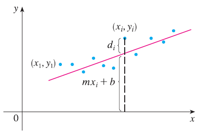

Suppose that a scientist has reason to believe that two quantities x and y are related linearly, that is, \(y = mx + b\), at least approximately, for some values of m and b. The scientist performs an experiment and collects data in the form of points \((x_1, y_1), (x_2, y_2), ..., (x_n, y_n)\), and then plots these points. The points don’t lie exactly on a straight line, so the scientist wants to find constants m and b so that the line \(y = mx + b\) “fits” the points as well as possible.

Let \(d_i = y_i - (mx_i + b)\) be the vertical deviation of the point \((x_i, y_i)\) from the line. The method of least squares determines m and b so as to minimize \(\sum_{i=1}^n d_i^2\), the sum of the squares of these deviations. Show that, according to this method, the line of best fit is obtained when \(m \sum_{i=1}^n x_i + bn = \sum_{i=1}^n y_i\) and \(m \sum_{i=1}^n x_i^2 + b \sum_{i=1}^n x_i = \sum_{i=1}^n x_i y_i\) Thus the line is found by solving these two equations in the two unknowns m and b.